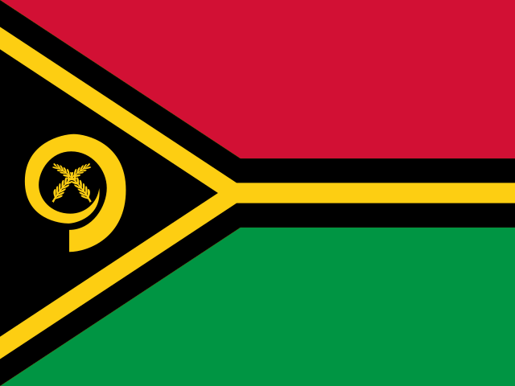

Vanuatu — Saldo delle partite correnti: andamento (1980–2026)Saldo delle partite correnti
Tabella dei dati
| 1980 | 1 mln | 1996 | -3 mln | 2012 | -50 mln |
| 1981 | 14 mln | 1997 | 1 mln | 2013 | -26 mln |
| 1982 | 12 mln | 1998 | 6 mln | 2014 | 3 mln |
| 1983 | 9 mln | 1999 | -19 mln | 2015 | -117 mln |
| 1984 | 22 mln | 2000 | 3 mln | 2016 | -68 mln |
| 1985 | 1 mln | 2001 | -4 mln | 2017 | -74 mln |
| 1986 | 6 mln | 2002 | -16 mln | 2018 | 25 mln |
| 1987 | 13 mln | 2003 | -25 mln | 2019 | 48 mln |
| 1988 | 3 mln | 2004 | -10 mln | 2020 | -109 mln |
| 1989 | 12 mln | 2005 | -36 mln | 2021 | -158 mln |
| 1990 | 5 mln | 2006 | -26 mln | 2022 | -140 mln |
| 1991 | -5 mln | 2007 | -34 mln | 2023 | -93 mln |
| 1992 | -5 mln | 2008 | -62 mln | 2024 | -256 mln |
| 1993 | -3 mln | 2009 | -48 mln | 2025 | -137 mln |
| 1994 | -8 mln | 2010 | -40 mln | 2026 | -119 mln |
| 1995 | -5 mln | 2011 | -59 mln |
Saldo delle partite correnti
Tabella dei dati
| 1980 | 0,9% | 1996 | -1,1% | 2012 | -6,1% |
| 1981 | 11,2% | 1997 | 0,3% | 2013 | -3,1% |
| 1982 | 9,3% | 1998 | 2,2% | 2014 | 0,3% |
| 1983 | 7,2% | 1999 | -6,3% | 2015 | -13,4% |
| 1984 | 13,7% | 2000 | 1,1% | 2016 | -7,5% |
| 1985 | 1% | 2001 | -1,2% | 2017 | -7,4% |
| 1986 | 4,3% | 2002 | -5,5% | 2018 | 2,5% |
| 1987 | 8,6% | 2003 | -7,3% | 2019 | 4,6% |
| 1988 | 1,5% | 2004 | -2,5% | 2020 | -9,7% |
| 1989 | 6,9% | 2005 | -8,3% | 2021 | -14,9% |
| 1990 | 2,5% | 2006 | -5,5% | 2022 | -12,4% |
| 1991 | -2,5% | 2007 | -6% | 2023 | -7,8% |
| 1992 | -2,3% | 2008 | -9,7% | 2024 | -20,2% |
| 1993 | -1,1% | 2009 | -7,4% | 2025 | -10,4% |
| 1994 | -3,1% | 2010 | -5,6% | 2026 | -8,6% |
| 1995 | -1,9% | 2011 | -7,3% |
© 2026 Geostarna